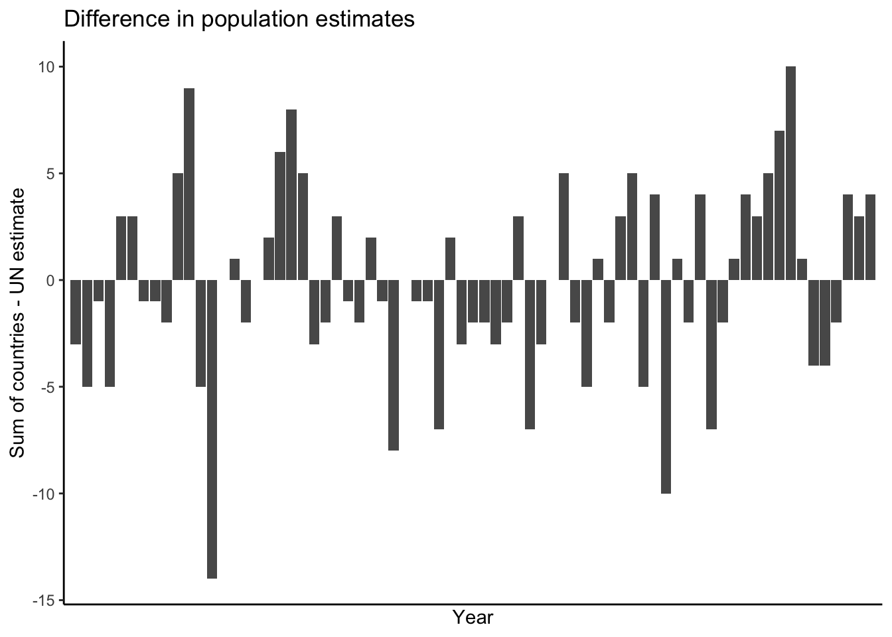
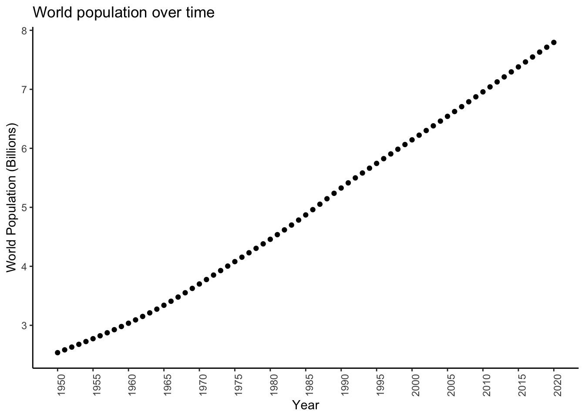
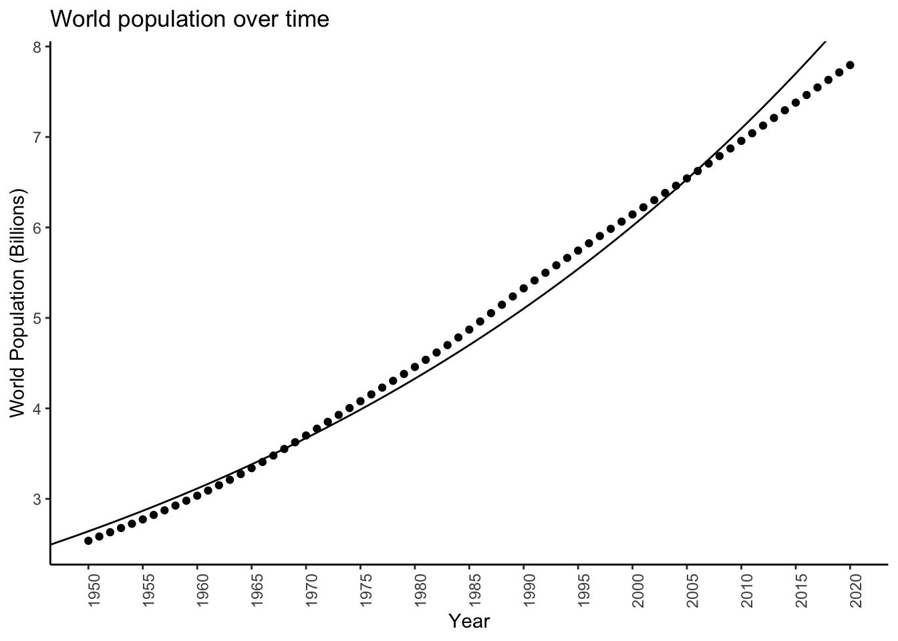

Chapter 15 Extended Example: World Population Data
In this chapter, we analyze the United Nations’ World Population Prospects data. These data contain estimated population sizes for each country for single years from 1950–2020, and projections for five year blocks from 2025–2100.
We will apply methods from each chapter of this course to answer questions about these data, the underlying true population of the world, and what the population will look like in the future. More specifically, we will:
Read in and prepare the data for analysis (Chapter 2),
Build a simple linear regression model for the total world population over time (Chapter 4),
Develop a Bayesian model for total world population (Chapter 6),
Contrast the two estimators for total world population on the real data, using bootstrapping (Chapter 7),
Quantify uncertainty in our estimate for total world population (Chapter 9),
Assess the goodness of fit of our model for total world population (Chapter 10),
Develop a Bayesian estimator for total world population (Chapter 11),
Predict the population to the year 2100 and compare our predictions and uncertainty quantification with those reported by the UN (Chapter 12).
15.1 Read in and prepare the data for analysis
The World Population Prospects data contain estimated population sizes for each country for single years from 1950–2020, and projections for five year blocks from 2025–2100. They are available for free download from that link. They are not in any form suitable for analysis, however. The data are contained in a spreadsheet with variables in both rows and columns, and summary statistics mixed in with the raw data.
I have done a bit of manual editing and posted the files to the book data folder
at data/worldpop/*. Let’s read in the data corresponding to the world population
estimates from 1950–2020. First, look at it, either in excel or on the command line:
country,1950,1951,1952,1953,1954,1955,1956,1957,1958,1959,1960,1961,1962,1963,1964,1965,1966,1967,1968,1969,1970,1971,1972,1973,1974,1975,1976,1977,1978,1979,1980,1981,1982,1983,1984,1985,1986,1987,1988,1989,1990,1991,1992,1993,1994,1995,1996,1997,1998,1999,2000,2001,2002,2003,2004,2005,2006,2007,2008,2009,2010,2011,2012,2013,2014,2015,2016,2017,2018,2019,2020
WORLD, 2 536 431, 2 584 034, 2 630 862, 2 677 609, 2 724 847, 2 773 020, 2 822 443, 2 873 306, 2 925 687, 2 979 576, 3 034 950, 3 091 844, 3 150 421, 3 211 001, 3 273 978, 3 339 584, 3 407 923, 3 478 770, 3 551 599, 3 625 681, 3 700 437, 3 775 760, 3 851 651, 3 927 781, 4 003 794, 4 079 480, 4 154 667, 4 229 506, 4 304 534, 4 380 506, 4 458 003, 4 536 997, 4 617 387, 4 699 569, 4 784 012, 4 870 922, 4 960 568, 5 052 522, 5 145 426, 5 237 441, 5 327 231, 5 414 289, 5 498 920, 5 581 598, 5 663 150, 5 744 213, 5 824 892, 5 905 046, 5 984 794, 6 064 239, 6 143 494, 6 222 627, 6 301 773, 6 381 185, 6 461 159, 6 541 907, 6 623 518, 6 705 947, 6 789 089, 6 872 767, 6 956 824, 7 041 194, 7 125 828, 7 210 582, 7 295 291, 7 379 797, 7 464 022, 7 547 859, 7 631 091, 7 713 468, 7 794 799
Burundi, 2 309, 2 360, 2 406, 2 449, 2 492, 2 537, 2 585, 2 636, 2 689, 2 743, 2 798, 2 852, 2 907, 2 964, 3 026, 3 094, 3 170, 3 253, 3 337, 3 414, 3 479, 3 530, 3 570, 3 605, 3 646, 3 701, 3 771, 3 854, 3 949, 4 051, 4 157, 4 267, 4 380, 4 498, 4 621, 4 751, 4 887, 5 027, 5 169, 5 307, 5 439, 5 565, 5 686, 5 798, 5 899, 5 987, 6 060, 6 122, 6 186, 6 267, 6 379, 6 526, 6 704, 6 909, 7 132, 7 365, 7 608, 7 862, 8 126, 8 398, 8 676, 8 958, 9 246, 9 540, 9 844, 10 160, 10 488, 10 827, 11 175, 11 531, 11 891
Comoros, 159, 163, 167, 170, 173, 176, 179, 182, 185, 188, 191, 194, 197, 200, 204, 207, 211, 216, 221, 225, 230, 235, 239, 244, 250, 257, 266, 276, 287, 297, 308, 318, 327, 336, 345, 355, 366, 377, 388, 400, 412, 424, 436, 449, 462, 475, 489, 502, 515, 529, 542, 556, 569, 583, 597, 612, 626, 642, 657, 673, 690, 707, 724, 742, 759, 777, 796, 814, 832, 851, 870
Djibouti, 62, 63, 65, 66, 68, 70, 71, 74, 76, 80, 84, 89, 94, 101, 108, 115, 123, 131, 140, 150, 160, 169, 179, 191, 205, 224, 249, 277, 308, 336, 359, 375, 385, 394, 406, 426, 454, 490, 529, 564, 590, 607, 615, 619, 622, 630, 644, 661, 680, 700, 718, 733, 747, 760, 772, 783, 795, 805, 816, 828, 840, 854, 868, 883, 899, 914, 929, 944, 959, 974, 988
Eritrea, 822, 835, 849, 865, 882, 900, 919, 939, 961, 983, 1 008, 1 033, 1 060, 1 089, 1 118, 1 148, 1 179, 1 210, 1 243, 1 276, 1 311, 1 347, 1 385, 1 424, 1 464, 1 505, 1 548, 1 592, 1 637, 1 684, 1 733, 1 785, 1 837, 1 891, 1 946, 2 004, 2 065, 2 127, 2 186, 2 231, 2 259, 2 266, 2 258, 2 239, 2 218, 2 204, 2 196, 2 195, 2 206, 2 237, 2 292, 2 375, 2 481, 2 601, 2 720, 2 827, 2 918, 2 997, 3 063, 3 120, 3 170, 3 214, 3 250, 3 281, 3 311, 3 343, 3 377, 3 413, 3 453, 3 497, 3 546
Ethiopia, 18 128, 18 467, 18 820, 19 184, 19 560, 19 947, 20 348, 20 764, 21 201, 21 662, 22 151, 22 671, 23 221, 23 798, 24 397, 25 014, 25 641, 26 280, 26 944, 27 653, 28 415, 29 249, 30 141, 31 037, 31 861, 32 567, 33 128, 33 577, 33 993, 34 488, 35 142, 35 985, 36 995, 38 143, 39 374, 40 652, 41 966, 43 329, 44 757, 46 272, 47 888, 49 610, 51 424, 53 296, 55 181, 57 048, 58 884, 60 697, 62 508, 64 343, 66 225, 68 159, 70 142, 72 171, 74 240, 76 346, 78 489, 80 674, 82 916, 85 234, 87 640, 90 140, 92 727, 95 386, 98 094, 100 835, 103 603, 106 400, 109 224, 112 079, 114 964
Kenya, 6 077, 6 242, 6 416, 6 598, 6 789, 6 988, 7 195, 7 412, 7 638, 7 874, 8 120, 8 378, 8 647, 8 929, 9 223, 9 530, 9 851, 10 187, 10 540, 10 911, 11 301, 11 713, 12 146, 12 601, 13 077, 13 576, 14 096, 14 639, 15 205, 15 798, 16 417, 17 064, 17 736, 18 432, 19 146, 19 877, 20 623, 21 382, 22 154, 22 935, 23 725, 24 522, 25 326, 26 136, 26 951, 27 768, 28 589, 29 416, 30 250, 31 099, 31 965, 32 849, 33 752, 34 679, 35 635, 36 625, 37 649, 38 706, 39 792, 40 902, 42 031, 43 178, 44 343, 45 520, 46 700, 47 878, 49 052, 50 221, 51 393, 52 574, 53 771
Madagascar, 4 084, 4 168, 4 257, 4 349, 4 444, 4 544, 4 647, 4 754, 4 865, 4 980, 5 099, 5 224, 5 352, 5 486, 5 625, 5 769, 5 919, 6 074, 6 234, 6 402, 6 576, 6 758, 6 947, 7 143, 7 346, 7 556, 7 773, 7 998, 8 230, 8 470, 8 717, 8 971, 9 234, 9 504, 9 781, 10 063, 10 352, 10 648, 10 952, 11 269, 11 599, 11 943, 12 301, 12 675, 13 067, 13 475, 13 903, 14 348, 14 809, 15 283, 15 767, 16 261, 16 765, 17 279, 17 803, 18 337, 18 880, 19 434, 19 996, 20 569, 21 152, 21 744, 22 347, 22 961, 23 590, 24 234, 24 894, 25 571, 26 262, 26 969, 27 691
Malawi, 2 954, 3 012, 3 072, 3 136, 3 202, 3 271, 3 342, 3 417, 3 495, 3 576, 3 660, 3 748, 3 839, 3 934, 4 032, 4 134, 4 240, 4 350, 4 464, 4 582, 4 704, 4 829, 4 959, 5 093, 5 235, 5 385, 5 546, 5 718, 5 897, 6 075, 6 250, 6 412, 6 566, 6 738, 6 965, 7 268, 7 666, 8 141, 8 637, 9 076, 9 404, 9 600, 9 686, 9 710, 9 746, 9 844, 10 023, 10 265, 10 552, 10 854, 11 149, 11 432, 11 714, 12 000, 12 302, 12 626, 12 974, 13 342, 13 728, 14 128, 14 540, 14 962, 15 396, 15 839, 16 290, 16 745, 17 205, 17 670, 18 143, 18 629, 19 130There is one character column containing the country and then \((2020 - 1950 + 1) = 71\) numeric columns containing population counts.
Let’s read it in with those specs:
worldpop <- readr::read_csv(
file = "data/worldpop/worldpop-estimates.csv",
col_names = TRUE,
col_types = stringr::str_c(c("c",rep("n",71)),collapse = "")
)
glimpse(worldpop)Observations: 236
Variables: 72
$ country <chr> "WORLD", "Burundi", "Comoros", "Djibouti", "Eritrea", "Ethiop…
$ `1950` <dbl> 2, 2, 159, 62, 822, 18, 6, 4, 2, 493, 15, 5, 248, 2, 36, 2, 2…
$ `1951` <dbl> 2, 2, 163, 63, 835, 18, 6, 4, 3, 506, 16, 6, 259, 2, 37, 2, 2…
$ `1952` <dbl> 2, 2, 167, 65, 849, 18, 6, 4, 3, 521, 16, 6, 268, 2, 37, 2, 2…
$ `1953` <dbl> 2, 2, 170, 66, 865, 19, 6, 4, 3, 537, 17, 6, 277, 2, 38, 2, 2…
$ `1954` <dbl> 2, 2, 173, 68, 882, 19, 6, 4, 3, 554, 18, 6, 284, 2, 39, 2, 2…
$ `1955` <dbl> 2, 2, 176, 70, 900, 19, 6, 4, 3, 571, 19, 6, 292, 2, 39, 2, 2…
$ `1956` <dbl> 2, 2, 179, 71, 919, 20, 7, 4, 3, 588, 20, 6, 300, 2, 39, 2, 2…
$ `1957` <dbl> 2, 2, 182, 74, 939, 20, 7, 4, 3, 605, 21, 6, 308, 2, 40, 2, 2…
$ `1958` <dbl> 2, 2, 185, 76, 961, 21, 7, 4, 3, 623, 22, 6, 317, 2, 40, 2, 2…
$ `1959` <dbl> 2, 2, 188, 80, 983, 21, 7, 4, 3, 641, 23, 7, 326, 2, 41, 2, 2…
$ `1960` <dbl> 3, 2, 191, 84, 1, 22, 8, 5, 3, 660, 24, 7, 336, 2, 42, 2, 2, …
$ `1961` <dbl> 3, 2, 194, 89, 1, 22, 8, 5, 3, 679, 25, 7, 345, 2, 42, 2, 2, …
$ `1962` <dbl> 3, 2, 197, 94, 1, 23, 8, 5, 3, 698, 27, 7, 355, 3, 43, 2, 2, …
$ `1963` <dbl> 3, 2, 200, 101, 1, 23, 8, 5, 3, 717, 28, 7, 366, 3, 45, 2, 3,…
$ `1964` <dbl> 3, 3, 204, 108, 1, 24, 9, 5, 4, 736, 29, 7, 378, 3, 46, 3, 3,…
$ `1965` <dbl> 3, 3, 207, 115, 1, 25, 9, 5, 4, 753, 31, 8, 391, 3, 47, 3, 3,…
$ `1966` <dbl> 3, 3, 211, 123, 1, 25, 9, 5, 4, 770, 32, 8, 405, 3, 48, 3, 3,…
$ `1967` <dbl> 3, 3, 216, 131, 1, 26, 10, 6, 4, 785, 33, 8, 421, 3, 49, 3, 3…
$ `1968` <dbl> 3, 3, 221, 140, 1, 26, 10, 6, 4, 799, 34, 8, 437, 3, 50, 3, 3…
$ `1969` <dbl> 3, 3, 225, 150, 1, 27, 10, 6, 4, 813, 36, 8, 451, 3, 51, 3, 3…
$ `1970` <dbl> 3, 3, 230, 160, 1, 28, 11, 6, 4, 826, 37, 9, 462, 3, 52, 3, 3…
$ `1971` <dbl> 3, 3, 235, 169, 1, 29, 11, 6, 4, 840, 39, 9, 470, 3, 54, 3, 3…
$ `1972` <dbl> 3, 3, 239, 179, 1, 30, 12, 6, 4, 852, 40, 9, 475, 3, 55, 3, 3…
$ `1973` <dbl> 3, 3, 244, 191, 1, 31, 12, 7, 5, 865, 42, 9, 479, 4, 57, 3, 3…
$ `1974` <dbl> 4, 3, 250, 205, 1, 31, 13, 7, 5, 878, 44, 9, 482, 4, 58, 3, 3…
$ `1975` <dbl> 4, 3, 257, 224, 1, 32, 13, 7, 5, 892, 45, 10, 485, 4, 60, 3, …
$ `1976` <dbl> 4, 3, 266, 249, 1, 33, 14, 7, 5, 907, 47, 10, 488, 4, 61, 4, …
$ `1977` <dbl> 4, 3, 276, 277, 1, 33, 14, 7, 5, 922, 49, 10, 492, 4, 62, 4, …
$ `1978` <dbl> 4, 3, 287, 308, 1, 33, 15, 8, 5, 938, 51, 11, 497, 4, 64, 5, …
$ `1979` <dbl> 4, 4, 297, 336, 1, 34, 15, 8, 6, 953, 53, 11, 502, 4, 65, 5, …
$ `1980` <dbl> 4, 4, 308, 359, 1, 35, 16, 8, 6, 966, 55, 11, 509, 5, 66, 6, …
$ `1981` <dbl> 4, 4, 318, 375, 1, 35, 17, 8, 6, 978, 58, 11, 517, 5, 67, 6, …
$ `1982` <dbl> 4, 4, 327, 385, 1, 36, 17, 9, 6, 989, 61, 12, 527, 5, 68, 6, …
$ `1983` <dbl> 4, 4, 336, 394, 1, 38, 18, 9, 6, 999, 64, 12, 537, 5, 69, 6, …
$ `1984` <dbl> 4, 4, 345, 406, 1, 39, 19, 9, 6, 1, 68, 12, 548, 5, 69, 6, 5,…
$ `1985` <dbl> 4, 4, 355, 426, 2, 40, 19, 10, 7, 1, 72, 12, 559, 6, 70, 6, 5…
$ `1986` <dbl> 4, 4, 366, 454, 2, 41, 20, 10, 7, 1, 76, 12, 569, 6, 70, 6, 5…
$ `1987` <dbl> 5, 5, 377, 490, 2, 43, 21, 10, 8, 1, 80, 12, 579, 6, 70, 6, 5…
$ `1988` <dbl> 5, 5, 388, 529, 2, 44, 22, 10, 8, 1, 85, 12, 589, 7, 70, 7, 5…
$ `1989` <dbl> 5, 5, 400, 564, 2, 46, 22, 11, 9, 1, 90, 12, 599, 7, 70, 7, 5…
$ `1990` <dbl> 5, 5, 412, 590, 2, 47, 23, 11, 9, 1, 95, 12, 611, 7, 71, 7, 5…
$ `1991` <dbl> 5, 5, 424, 607, 2, 49, 24, 11, 9, 1, 100, 13, 622, 7, 71, 7, …
$ `1992` <dbl> 5, 5, 436, 615, 2, 51, 25, 12, 9, 1, 106, 13, 635, 6, 73, 7, …
$ `1993` <dbl> 5, 5, 449, 619, 2, 53, 26, 12, 9, 1, 112, 14, 648, 6, 74, 7, …
$ `1994` <dbl> 5, 5, 462, 622, 2, 55, 26, 13, 9, 1, 117, 14, 661, 5, 75, 7, …
$ `1995` <dbl> 5, 5, 475, 630, 2, 57, 27, 13, 9, 1, 123, 15, 674, 5, 77, 7, …
$ `1996` <dbl> 5, 6, 489, 644, 2, 58, 28, 13, 10, 1, 129, 15, 686, 6, 78, 7,…
$ `1997` <dbl> 5, 6, 502, 661, 2, 60, 29, 14, 10, 1, 134, 16, 699, 6, 78, 7,…
$ `1998` <dbl> 5, 6, 515, 680, 2, 62, 30, 14, 10, 1, 140, 16, 712, 6, 79, 8,…
$ `1999` <dbl> 6, 6, 529, 700, 2, 64, 31, 15, 10, 1, 145, 17, 724, 7, 80, 8,…
$ `2000` <dbl> 6, 6, 542, 718, 2, 66, 31, 15, 11, 1, 150, 17, 737, 7, 81, 8,…
$ `2001` <dbl> 6, 6, 556, 733, 2, 68, 32, 16, 11, 1, 156, 18, 749, 8, 82, 9,…
$ `2002` <dbl> 6, 6, 569, 747, 2, 70, 33, 16, 11, 1, 161, 18, 760, 8, 84, 9,…
$ `2003` <dbl> 6, 6, 583, 760, 2, 72, 34, 17, 12, 1, 167, 19, 771, 8, 86, 9,…
$ `2004` <dbl> 6, 7, 597, 772, 2, 74, 35, 17, 12, 1, 172, 19, 782, 8, 87, 10…
$ `2005` <dbl> 6, 7, 612, 783, 2, 76, 36, 18, 12, 1, 178, 20, 792, 8, 89, 10…
$ `2006` <dbl> 6, 7, 626, 795, 2, 78, 37, 18, 12, 1, 184, 21, 801, 9, 90, 10…
$ `2007` <dbl> 6, 7, 642, 805, 2, 80, 38, 19, 13, 1, 190, 21, 809, 9, 90, 11…
$ `2008` <dbl> 6, 8, 657, 816, 3, 82, 39, 19, 13, 1, 196, 22, 816, 9, 90, 11…
$ `2009` <dbl> 6, 8, 673, 828, 3, 85, 40, 20, 14, 1, 202, 22, 824, 9, 91, 11…
$ `2010` <dbl> 6, 8, 690, 840, 3, 87, 42, 21, 14, 1, 209, 23, 831, 10, 91, 1…
$ `2011` <dbl> 7, 8, 707, 854, 3, 90, 43, 21, 14, 1, 215, 24, 837, 10, 92, 1…
$ `2012` <dbl> 7, 9, 724, 868, 3, 92, 44, 22, 15, 1, 221, 24, 844, 10, 93, 1…
$ `2013` <dbl> 7, 9, 742, 883, 3, 95, 45, 22, 15, 1, 227, 25, 851, 10, 93, 1…
$ `2014` <dbl> 7, 9, 759, 899, 3, 98, 46, 23, 16, 1, 234, 26, 857, 11, 94, 1…
$ `2015` <dbl> 7, 10, 777, 914, 3, 100, 47, 24, 16, 1, 240, 27, 863, 11, 95,…
$ `2016` <dbl> 7, 10, 796, 929, 3, 103, 49, 24, 17, 1, 246, 27, 870, 11, 96,…
$ `2017` <dbl> 7, 10, 814, 944, 3, 106, 50, 25, 17, 1, 253, 28, 876, 11, 96,…
$ `2018` <dbl> 7, 11, 832, 959, 3, 109, 51, 26, 18, 1, 260, 29, 883, 12, 97,…
$ `2019` <dbl> 7, 11, 851, 974, 3, 112, 52, 26, 18, 1, 266, 30, 889, 12, 98,…
$ `2020` <dbl> 7, 11, 870, 988, 3, 114, 53, 27, 19, 1, 273, 31, 895, 12, 98,…Does that look correct to you?
No. Why is the world population only 2 for 1950? If you read the documentation for the data, you may notice that population is recorded in thousands, but I still think that there were more than \(2,000\) people in the world in 1950. Also, I’m pretty sure the single country of Comoros shouldn’t have more people than the entire world.
Always look at the data when you read it in.
The problem is debugged by printing the data out on the command line like we did above,
and noticing that in the original file, numbers are stored with spaces in them.
We have to remove these spaces for R to read in the data correctly. This kind
of simple but annoying thing happens all the time when analyzing data “in the wild”.
To remove the spaces (this works for any annoying character like a period, or a
dollar sign, or whatever), read the data in with all columns as character, process
the data in R, and then convert to numeric. Check it out:
remove_space <- function(x) stringr::str_remove_all(x," ")
worldpop <- readr::read_csv(
file = "data/worldpop/worldpop-estimates.csv",
col_names = TRUE,
col_types = stringr::str_c(rep("c",72),collapse = "")
) %>%
# Remove the space
mutate_at(vars(`1950`:`2020`),remove_space) %>%
# Convert to numeric
mutate_at(vars(`1950`:`2020`),as.numeric)
glimpse(worldpop)Observations: 236
Variables: 72
$ country <chr> "WORLD", "Burundi", "Comoros", "Djibouti", "Eritrea", "Ethiop…
$ `1950` <dbl> 2536431, 2309, 159, 62, 822, 18128, 6077, 4084, 2954, 493, 15…
$ `1951` <dbl> 2584034, 2360, 163, 63, 835, 18467, 6242, 4168, 3012, 506, 16…
$ `1952` <dbl> 2630862, 2406, 167, 65, 849, 18820, 6416, 4257, 3072, 521, 16…
$ `1953` <dbl> 2677609, 2449, 170, 66, 865, 19184, 6598, 4349, 3136, 537, 17…
$ `1954` <dbl> 2724847, 2492, 173, 68, 882, 19560, 6789, 4444, 3202, 554, 18…
$ `1955` <dbl> 2773020, 2537, 176, 70, 900, 19947, 6988, 4544, 3271, 571, 19…
$ `1956` <dbl> 2822443, 2585, 179, 71, 919, 20348, 7195, 4647, 3342, 588, 20…
$ `1957` <dbl> 2873306, 2636, 182, 74, 939, 20764, 7412, 4754, 3417, 605, 21…
$ `1958` <dbl> 2925687, 2689, 185, 76, 961, 21201, 7638, 4865, 3495, 623, 22…
$ `1959` <dbl> 2979576, 2743, 188, 80, 983, 21662, 7874, 4980, 3576, 641, 23…
$ `1960` <dbl> 3034950, 2798, 191, 84, 1008, 22151, 8120, 5099, 3660, 660, 2…
$ `1961` <dbl> 3091844, 2852, 194, 89, 1033, 22671, 8378, 5224, 3748, 679, 2…
$ `1962` <dbl> 3150421, 2907, 197, 94, 1060, 23221, 8647, 5352, 3839, 698, 2…
$ `1963` <dbl> 3211001, 2964, 200, 101, 1089, 23798, 8929, 5486, 3934, 717, …
$ `1964` <dbl> 3273978, 3026, 204, 108, 1118, 24397, 9223, 5625, 4032, 736, …
$ `1965` <dbl> 3339584, 3094, 207, 115, 1148, 25014, 9530, 5769, 4134, 753, …
$ `1966` <dbl> 3407923, 3170, 211, 123, 1179, 25641, 9851, 5919, 4240, 770, …
$ `1967` <dbl> 3478770, 3253, 216, 131, 1210, 26280, 10187, 6074, 4350, 785,…
$ `1968` <dbl> 3551599, 3337, 221, 140, 1243, 26944, 10540, 6234, 4464, 799,…
$ `1969` <dbl> 3625681, 3414, 225, 150, 1276, 27653, 10911, 6402, 4582, 813,…
$ `1970` <dbl> 3700437, 3479, 230, 160, 1311, 28415, 11301, 6576, 4704, 826,…
$ `1971` <dbl> 3775760, 3530, 235, 169, 1347, 29249, 11713, 6758, 4829, 840,…
$ `1972` <dbl> 3851651, 3570, 239, 179, 1385, 30141, 12146, 6947, 4959, 852,…
$ `1973` <dbl> 3927781, 3605, 244, 191, 1424, 31037, 12601, 7143, 5093, 865,…
$ `1974` <dbl> 4003794, 3646, 250, 205, 1464, 31861, 13077, 7346, 5235, 878,…
$ `1975` <dbl> 4079480, 3701, 257, 224, 1505, 32567, 13576, 7556, 5385, 892,…
$ `1976` <dbl> 4154667, 3771, 266, 249, 1548, 33128, 14096, 7773, 5546, 907,…
$ `1977` <dbl> 4229506, 3854, 276, 277, 1592, 33577, 14639, 7998, 5718, 922,…
$ `1978` <dbl> 4304534, 3949, 287, 308, 1637, 33993, 15205, 8230, 5897, 938,…
$ `1979` <dbl> 4380506, 4051, 297, 336, 1684, 34488, 15798, 8470, 6075, 953,…
$ `1980` <dbl> 4458003, 4157, 308, 359, 1733, 35142, 16417, 8717, 6250, 966,…
$ `1981` <dbl> 4536997, 4267, 318, 375, 1785, 35985, 17064, 8971, 6412, 978,…
$ `1982` <dbl> 4617387, 4380, 327, 385, 1837, 36995, 17736, 9234, 6566, 989,…
$ `1983` <dbl> 4699569, 4498, 336, 394, 1891, 38143, 18432, 9504, 6738, 999,…
$ `1984` <dbl> 4784012, 4621, 345, 406, 1946, 39374, 19146, 9781, 6965, 1008…
$ `1985` <dbl> 4870922, 4751, 355, 426, 2004, 40652, 19877, 10063, 7268, 101…
$ `1986` <dbl> 4960568, 4887, 366, 454, 2065, 41966, 20623, 10352, 7666, 102…
$ `1987` <dbl> 5052522, 5027, 377, 490, 2127, 43329, 21382, 10648, 8141, 103…
$ `1988` <dbl> 5145426, 5169, 388, 529, 2186, 44757, 22154, 10952, 8637, 103…
$ `1989` <dbl> 5237441, 5307, 400, 564, 2231, 46272, 22935, 11269, 9076, 104…
$ `1990` <dbl> 5327231, 5439, 412, 590, 2259, 47888, 23725, 11599, 9404, 105…
$ `1991` <dbl> 5414289, 5565, 424, 607, 2266, 49610, 24522, 11943, 9600, 106…
$ `1992` <dbl> 5498920, 5686, 436, 615, 2258, 51424, 25326, 12301, 9686, 108…
$ `1993` <dbl> 5581598, 5798, 449, 619, 2239, 53296, 26136, 12675, 9710, 109…
$ `1994` <dbl> 5663150, 5899, 462, 622, 2218, 55181, 26951, 13067, 9746, 111…
$ `1995` <dbl> 5744213, 5987, 475, 630, 2204, 57048, 27768, 13475, 9844, 112…
$ `1996` <dbl> 5824892, 6060, 489, 644, 2196, 58884, 28589, 13903, 10023, 11…
$ `1997` <dbl> 5905046, 6122, 502, 661, 2195, 60697, 29416, 14348, 10265, 11…
$ `1998` <dbl> 5984794, 6186, 515, 680, 2206, 62508, 30250, 14809, 10552, 11…
$ `1999` <dbl> 6064239, 6267, 529, 700, 2237, 64343, 31099, 15283, 10854, 11…
$ `2000` <dbl> 6143494, 6379, 542, 718, 2292, 66225, 31965, 15767, 11149, 11…
$ `2001` <dbl> 6222627, 6526, 556, 733, 2375, 68159, 32849, 16261, 11432, 11…
$ `2002` <dbl> 6301773, 6704, 569, 747, 2481, 70142, 33752, 16765, 11714, 12…
$ `2003` <dbl> 6381185, 6909, 583, 760, 2601, 72171, 34679, 17279, 12000, 12…
$ `2004` <dbl> 6461159, 7132, 597, 772, 2720, 74240, 35635, 17803, 12302, 12…
$ `2005` <dbl> 6541907, 7365, 612, 783, 2827, 76346, 36625, 18337, 12626, 12…
$ `2006` <dbl> 6623518, 7608, 626, 795, 2918, 78489, 37649, 18880, 12974, 12…
$ `2007` <dbl> 6705947, 7862, 642, 805, 2997, 80674, 38706, 19434, 13342, 12…
$ `2008` <dbl> 6789089, 8126, 657, 816, 3063, 82916, 39792, 19996, 13728, 12…
$ `2009` <dbl> 6872767, 8398, 673, 828, 3120, 85234, 40902, 20569, 14128, 12…
$ `2010` <dbl> 6956824, 8676, 690, 840, 3170, 87640, 42031, 21152, 14540, 12…
$ `2011` <dbl> 7041194, 8958, 707, 854, 3214, 90140, 43178, 21744, 14962, 12…
$ `2012` <dbl> 7125828, 9246, 724, 868, 3250, 92727, 44343, 22347, 15396, 12…
$ `2013` <dbl> 7210582, 9540, 742, 883, 3281, 95386, 45520, 22961, 15839, 12…
$ `2014` <dbl> 7295291, 9844, 759, 899, 3311, 98094, 46700, 23590, 16290, 12…
$ `2015` <dbl> 7379797, 10160, 777, 914, 3343, 100835, 47878, 24234, 16745, …
$ `2016` <dbl> 7464022, 10488, 796, 929, 3377, 103603, 49052, 24894, 17205, …
$ `2017` <dbl> 7547859, 10827, 814, 944, 3413, 106400, 50221, 25571, 17670, …
$ `2018` <dbl> 7631091, 11175, 832, 959, 3453, 109224, 51393, 26262, 18143, …
$ `2019` <dbl> 7713468, 11531, 851, 974, 3497, 112079, 52574, 26969, 18629, …
$ `2020` <dbl> 7794799, 11891, 870, 988, 3546, 114964, 53771, 27691, 19130, …Good. Verify that a few values of your choosing match their entries in the original text data.
The data are in wide format, with the “year” variable contained in the columns. We
want the data in long format for analysis, with two variables, country and year,
and a variable containing the population count.
We can do that:
worldpop <- worldpop %>%
pivot_longer(
`1950`:`2020`,
names_to = "year",
values_to = "population"
) %>%
mutate(year = as.numeric(year))
glimpse(worldpop)Observations: 16,756
Variables: 3
$ country <chr> "WORLD", "WORLD", "WORLD", "WORLD", "WORLD", "WORLD", "WOR…
$ year <dbl> 1950, 1951, 1952, 1953, 1954, 1955, 1956, 1957, 1958, 1959…
$ population <dbl> 2536431, 2584034, 2630862, 2677609, 2724847, 2773020, 2822…That looks better! Do the following exercises:
Exercises:
What is the estimated world population in 2020 (remember, the recorded values are in thousands of people. Answer this question in terms of number of people)?
What is the estimated world population in Canada in 1975? Use the
filterfunction.The total world population should equal the sum of the population in each country. Check this. Do the following:
Compute the world population by summing the population of each country. Use the
filterfunction to remove theWORLDrow from each year. Then usegroup_byandsummarizeto sumpopulationovercountry. Save the result in a dataframe calledworldpop_summed.Pull the UN’s estimated world population by using the
filterfunction to keep only theWORLDrow from each year. Save this in a dataframe calledworldpop_un.Join them, and make a plot of the difference between the sum of the countries’ populations and the UN’s estimate, for each year. Here’s what I got for both the data and the plot:
Observations: 71
Variables: 4
$ year <dbl> 1950, 1951, 1952, 1953, 1954, 1955, 1956, 1957, 1958, 1959…
$ worldpop <dbl> 2536428, 2584029, 2630861, 2677604, 2724850, 2773023, 2822…
$ country <chr> "WORLD", "WORLD", "WORLD", "WORLD", "WORLD", "WORLD", "WOR…
$ population <dbl> 2536431, 2584034, 2630862, 2677609, 2724847, 2773020, 2822…
Hints: use scale_x_discrete(breaks = as.character(seq(1950,2020,by=5))) to get
the five-year axis, and use theme(axis.text.x = element_text(angle = 90)) to make the axis text
sideways. Use geom_bar(stat = "identity") to get the bar plot. Or, make another
type of plot of your choosing! Don’t be afraid to have some fun.
Now, for later in this chapter, we’re going to need data on the world population projections from 2020–2100. The median and “95% intervals” (you’ll learn what this means later) are all stored in seperate files. I’ll read in the “median” one and then you’ll read in the “interval” ones and then join them all together.
The prediction data is mostly in the same format as the population estimates. The
numbers are now stored with quotes and with thousands separated by commas, however.
Like when it was stored with thousands separated by spaces, we have to read it in
as a character, and then process the data in R and convert to numeric.
country,2020,2025,2030,2035,2040,2045,2050,2055,2060,2065,2070,2075,2080,2085,2090,2095,2100
WORLD,"7,794,799","8,184,437","8,548,487","8,887,524","9,198,847","9,481,803","9,735,034","9,958,099","10,151,470","10,317,879","10,459,240","10,577,288","10,673,904","10,750,662","10,809,892","10,851,860","10,875,394"
Eastern Africa,"445,406","505,292","569,705","637,437","707,393","778,916","851,218","923,483","994,888","1,064,642","1,131,895","1,195,953","1,256,219","1,312,230","1,363,577","1,410,118","1,451,842"
Burundi,"11,891","13,764","15,773","17,932","20,253","22,728","25,325","27,995","30,701","33,408","36,107","38,790","41,427","43,993","46,451","48,761","50,904"
Comoros,870,965,"1,063","1,164","1,266","1,370","1,472","1,571","1,666","1,756","1,841","1,919","1,990","2,052","2,106","2,151","2,187"
Djibouti,988,"1,056","1,117","1,170","1,217","1,259","1,295","1,325","1,346","1,358","1,364","1,365","1,363","1,359","1,353","1,343","1,332"
Eritrea,"3,546","3,866","4,240","4,664","5,114","5,567","6,005","6,427","6,836","7,231","7,605","7,946","8,248","8,510","8,731","8,915","9,062"
Ethiopia,"114,964","129,749","144,944","160,231","175,466","190,611","205,411","219,639","232,994","245,316","256,441","266,190","274,558","281,512","287,056","291,317","294,393"
Kenya,"53,771","59,981","66,450","73,026","79,470","85,669","91,575","97,175","102,398","107,170","111,411","115,093","118,214","120,777","122,807","124,341","125,424"
Madagascar,"27,691","31,510","35,622","39,949","44,471","49,175","54,048","59,033","64,059","69,074","74,035","78,897","83,598","88,090","92,343","96,310","99,957"remove_comma <- function(x) stringr::str_remove_all(x,",")
worldpop_pred_median <- readr::read_csv(
file = "data/worldpop/worldpop-pred-median.csv",
col_names = TRUE,
col_types = stringr::str_c(rep("c",18),collapse = "")
) %>%
# Remove the commas. R already removed the quotes.
mutate_at(vars(`2020`:`2100`),remove_comma) %>%
# Convert to numeric
mutate_at(vars(`2020`:`2100`),as.numeric) %>%
# Pivot to long format
pivot_longer(
`2020`:`2100`,
names_to = "year",
values_to = "population"
) %>%
mutate(year = as.numeric(year))
glimpse(worldpop_pred_median)Observations: 4,029
Variables: 3
$ country <chr> "WORLD", "WORLD", "WORLD", "WORLD", "WORLD", "WORLD", "WOR…
$ year <dbl> 2020, 2025, 2030, 2035, 2040, 2045, 2050, 2055, 2060, 2065…
$ population <dbl> 7794799, 8184437, 8548487, 8887524, 9198847, 9481803, 9735…Exercise: read in the worldpop-pred-lower95.csv and worldpop-pred-upper95.csv
datasets into dataframes called worldpop_pred_lower95 and worldpop_pred_upper95,
with the population variable named population_lower95 and population_upper95.
Join the three dataframes into a dataframe worldpop_pred which looks like this:
Observations: 4,012
Variables: 5
$ country <chr> "WORLD", "WORLD", "WORLD", "WORLD", "WORLD", "WORL…
$ year <dbl> 2020, 2025, 2030, 2035, 2040, 2045, 2050, 2055, 20…
$ population <dbl> 7794799, 8184437, 8548487, 8887524, 9198847, 94818…
$ population_lower95 <dbl> 7794799, 8144343, 8460182, 8746077, 8996324, 92131…
$ population_upper95 <dbl> 7794799, 8223574, 8636041, 9029502, 9396987, 97448…We’ll use these data later in this chapter.
15.2 Model world population over time
Look at the world population across years:
worldpopplot <- worldpop %>%
filter(country=='WORLD') %>%
ggplot(aes(x = year,y = population)) +
theme_classic() +
geom_point() +
theme(axis.text.x = element_text(angle = 90)) +
labs(title = "World population over time",
x = "Year",
y = "World Population (Billions)") +
scale_x_continuous(breaks = seq(1950,2020,by=5)) +
scale_y_continuous(labels = function(x) x*1e-06)
worldpopplot
It looks like population may be growing at a pretty constant rate, or equivalently (sort of- bear with me), may be increasing by a constant amount each year. What is this rate/increase?
This is an inference problem. We have data (population counts for each year) and a model (population grows at a constant rate from year to year) and we need to infer the value of an unknown parameter (the rate at which population grows).
In order to do this, we need to write down our model more formally. Let \(Y_{i}\) be the random variable representing the world population in year \(i\) with \(i = 1950,\ldots,2020\). We think the population increases by the same amount per year on average, but want to allow for a bit of variability. We can model: \[ Y_{i+1} - Y_{i} \overset{iid}{\sim}\text{Normal}\left(\Delta,\sigma^{2}\right) \] and then infer \(\Delta\), the average increase in population.
Exercise: estimate \(\Delta\) using the sample mean of the differences
in population. You can use the diff function, or the lag function to
compute the differences– look up their documentation for help. I got the following:
Mean: 75120 So it looks like the population increases by about 7.5 million on average (remember, population here is in thousands).
It turns out that what we just did is similar to the following linear regression model: \[ Y_{i} = \beta_{0} + \Delta i + \epsilon_{i}, \ \epsilon_{i} \overset{iid}{\sim}\text{Normal}\left(0,\sigma^{2}/2\right) \] This is because: \[\begin{equation}\begin{aligned} Y_{i} &= \beta_{0} + \Delta i + \epsilon_{i} \\ Y_{i+1} &= \beta_{0} + \Delta (i+1) + \epsilon_{i+1} \\ \implies Y_{i+1} - Y_{i} = \Delta + \left(\epsilon_{i+1} - \epsilon_{i}\right) \end{aligned}\end{equation}\] and \(\left(\epsilon_{i+1} - \epsilon_{i}\right)\overset{iid}{\sim}\text{Normal}\left(0,\sigma^{2}\right)\).
diffmod <- lm(population ~ as.numeric(year),data = filter(worldpop,country == 'WORLD'))
summary(diffmod)
Call:
lm(formula = population ~ as.numeric(year), data = filter(worldpop,
country == "WORLD"))
Residuals:
Min 1Q Median 3Q Max
-119897 -89256 964 52493 294834
Coefficients:
Estimate Std. Error t value Pr(>|t|)
(Intercept) -1.50e+08 1.12e+06 -134 <2e-16 ***
as.numeric(year) 7.79e+04 5.63e+02 138 <2e-16 ***
---
Signif. codes: 0 '***' 0.001 '**' 0.01 '*' 0.05 '.' 0.1 ' ' 1
Residual standard error: 97200 on 69 degrees of freedom
Multiple R-squared: 0.996, Adjusted R-squared: 0.996
F-statistic: 1.91e+04 on 1 and 69 DF, p-value: <2e-16[1] 77877The estimated slope of the regression line is \(\hat{\Delta} = 77877\), close to the mean difference (estimating the standard deviation is a bit trickier).
Plot the model:

It’s ok. It looks like maybe the growth isn’t by some constant value each year, but rather maybe the emph rate of growth is constant.
We can build a linear regression model for that, too. Consider the following growth model: \[ Y_{i+1} = Y_{i}(1+\Delta) \] where the parameter \(\Delta\) is now the rate of population growth. We can model this approximately as a linear regression model: \[ Y_{i} = \exp\left( \beta_{0} + \Delta i + \epsilon_{i}\right) \] This gives \[ Y_{i+1}/Y_{i} = \exp\left(\Delta + \epsilon_{i+1} - \epsilon_{i}\right) \] which, ignoring the errors, gives \(\exp(\Delta) \approx 1 + \Delta\). You may or may not recall that the approximation \(e^{x} \approx 1 + x\) is a first-order Taylor expansion of \(e^{x}\).
Wait, how is this even a linear regression model? That’s obtained by taking logs: \[ \log Y_{i} = \beta_{0} + \Delta i + \epsilon_{i} \] so we fit this model by computing a new variable \(\log Y_{i}\) in the data, and then doing a linear regression model for that.
Exercise: fit this model:
Create a new variable
logpopulationusingmutate(),Do a linear regression as above, like
lm(logpopulation ~ ...).
Here’s what I got, calling my model object logmodel:
Call:
lm(formula = logpopulation ~ year, data = logpopdat)
Residuals:
Min 1Q Median 3Q Max
-0.07032 -0.02804 0.00389 0.02891 0.04295
Coefficients:
Estimate Std. Error t value Pr(>|t|)
(Intercept) -1.73e+01 3.66e-01 -47.3 <2e-16 ***
year 1.65e-02 1.85e-04 89.2 <2e-16 ***
---
Signif. codes: 0 '***' 0.001 '**' 0.01 '*' 0.05 '.' 0.1 ' ' 1
Residual standard error: 0.0319 on 69 degrees of freedom
Multiple R-squared: 0.991, Adjusted R-squared: 0.991
F-statistic: 7.96e+03 on 1 and 69 DF, p-value: <2e-16[1] 0.016599So it looks like population increases by about \(1.66\%\) each year on average.
Check out how it looks (I called my new data logpopdat):
logpopdat %>%
ggplot(aes(x = year,y = logpopulation)) +
theme_classic() +
geom_point() +
geom_abline(slope = coef(logmodel)[2],intercept = coef(logmodel)[1]) +
coord_trans(y = "exp") +
theme(axis.text.x = element_text(angle = 90)) +
labs(title = "World population over time",
x = "Year",
y = "World Population (Billions)") +
scale_x_continuous(breaks = seq(1950,2020,by=5)) +
scale_y_continuous(breaks = log(3:8 * 1e06),labels = function(x) exp(x)*1e-06)
We don’t yet have the tools to tell if one model is “better” than the other!